Like wine, appreciation of film is a matter of taste. While my film watching isn't as prolific as my wine sampling, I caught almost 150 new releases last year and would recommend at least the top 50 to most viewers. Like wine, not every film is for every palate, but I pride myself on recommending just the right thing, once I know your taste. 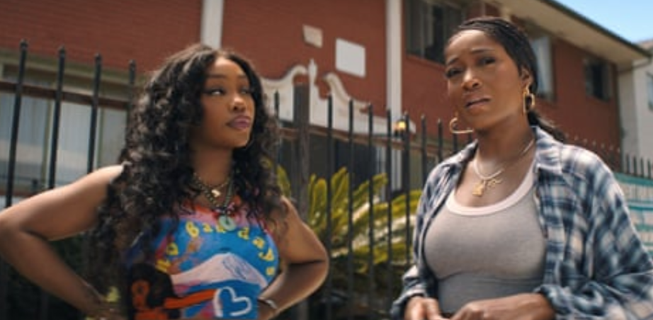 #25 — One of Them Days BEST COMEDY — BEST DEBUT PERFORMANCE (SZA) — BEST CARTOON PHYSICS First-time feature filmmaker Lawrence Lamont directed the most consistently funny film of the year (props to the new The Naked Gun and The Day the Earth Blew Up for joke density tho). This buddy comedy is my preferred everyday-folks-in-need-of-fast-cash journey over Mr. Mauser’s misadventures for likability of our protagonist alone; Keke Palmer has been a welcome screen presence for years and plays a solid straight man to SZA’s head-in-the-clouds roomie whose hierarchy of needs placed their rent money in the hands of a trifling but hung dreamer/schemer boyfriend. Sgulp! There’s light social commentary here and there, amusingly delivered most often as the pair interact with Katt Williams playing a wise man of the streets, always a joy. Maude Apatow is also put to great use here as an affable if fairly clueless gentrifier. Tee + Hee! 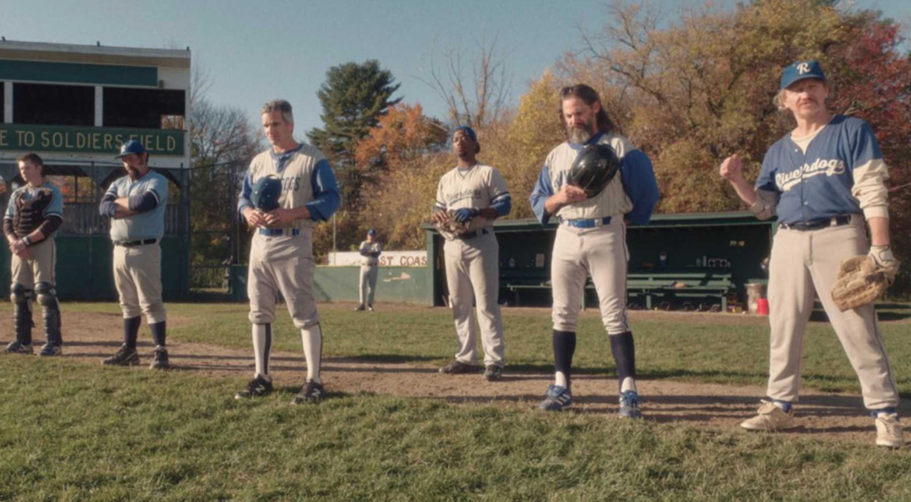 #24 — Eephus RUNNER-UP FOR MOST “AM I DREAMING OR…” — BEST DUDES STANDING AROUND — BEST BEER MOVIE The polar opposite of a one-crazy-night adventure, Carson Lund’s drawn-out yawn of a baseball flick captures the lethargy of watching a baseball game live, of slow mornings when one drifts in and out of dream. Watching it recalled a Yankees game I attended years ago with a UK pal who had yet to witness a full game, and wouldn’t you know, there were no points scored by either team until the bottom of the ninth, but overpriced beers and snacks were had over forgettable breezy conversation. A perfect afternoon. The stakes couldn’t be lower here, but if you’ve any affection for stopping to watch a few minutes of a game while wandering through a neighborhood or public park, this one will warm the soul, its asides to observers reflecting a community of all ages more interested in their own chat and philosophising than the game. As it should be.  #23 — Superman BEST DOG — BEST ‘DO (NATHAN FILLION) — BEST COUPLE (Superman & Lois) James Gunn understands Superman’s place in a wider universe, from fleshing out the staff and feel of the Daily Planet to the importance of levity when plotting challenges for a character lesser writers get wrong all too often. As I understand it, Gunn mined the tone of Grant Morrison’s All-Star Superman, one of both Supes and Morrison’s strongest showings (much as his earlier Vertigo-era psychedelia like Seaman or The Invisibles touch on ~our~ world more interestingly). He’s man and myth but Gunn’s Clark will always stop to make sure no innocent bystanders are crushed by the mundane visits of intergalactic interlopers but will also makes time to engage in a tête-à-tête with his better half. Love to not be forced to endure another will they won’t they with a foregone conclusion. Nic Hoult as a snivelling Elon Lex also rocks. 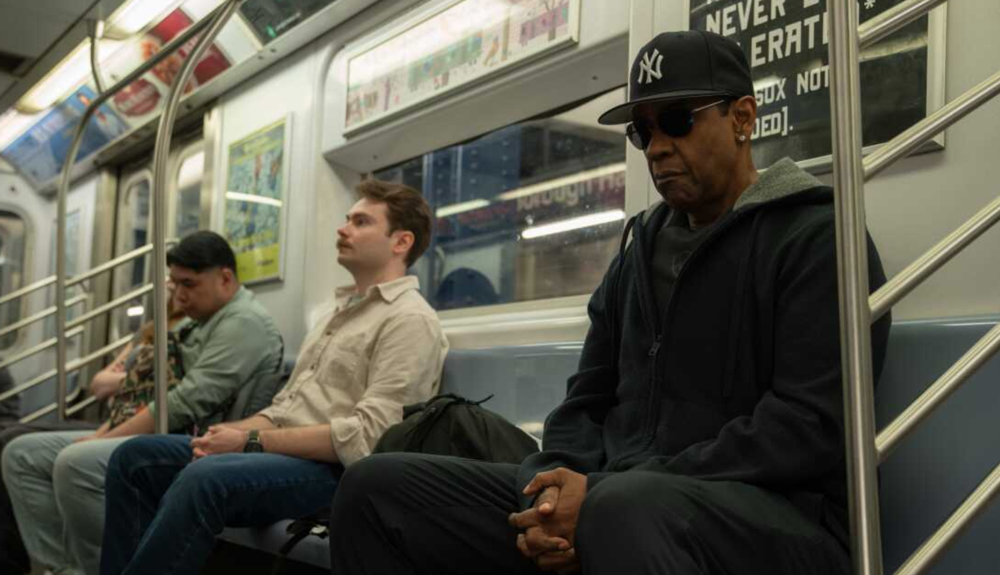 #22 — Highest 2 Lowest BEST NEEDLEDROPS — BEST NEW YORK CITY, BABY — BEST RECOVERY What they’ve said is true! After a euphoric opening sequence in which the city couldn’t look more beautiful, Lee’s narrative spends too many long scenes with characters irrelevant to the plot’s more interesting machinations such that I ~did~ question briefly where this train was headed. Folks! Lemme tell ya those worries were assuaged by the thrill ride second act and forgotten by the third. Denzel gets to cook here, a different kind of king than his delightful turn in the otherwise odd Gladiator 2 last year. A juicy steak of a performance which also features the first of two great supporting turns from A$AP Rocky on the side, this one less loveable. NGL Wendell Pierce and Dean Winters (yes, there is a Mayhem reference) playing cops is extremely to my taste so I was on board as soon as they showed up and appreciated how much screen time they were allotted as the central kidnapping develops. Flawed but ever so fun! 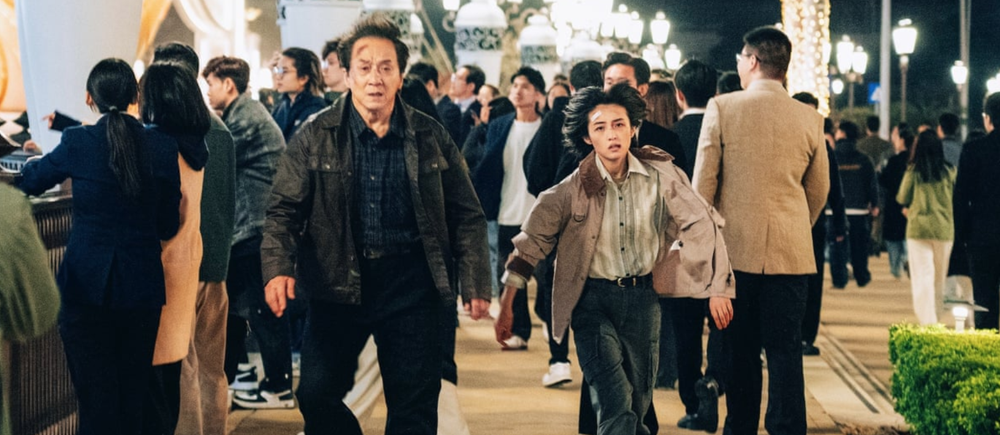 #21 — The Shadow’s Edge BEST ACTION — HOTTEST BADDIES — MOST OLD-TIMERS STILL GOT IT In a middling year for action flicks, Larry Yang’s film is my favorite. It blends gunplay, hand-to-fist-to-foot-to-face combat, hidden identities and ludicrous stunts that were consistently more tense and fun than either old and new domestic standbys like Mission: Impossible or Ballerina feat. John Wick (but shout out to Fight or Flight, the silly Hartnett on a plane flick that ~did~ work wonders beyond its budget). This one pits the reluctant pair of retired cop Jackie Chan and hyper-competent younger cop Zhang Zifeng (😍) against Tony Leung Ka-fai as a master criminal who has lived for ages in the shadows as secret daddy to a group of Hot Boys Who Heist. The film’s only crime is mild overlength if anything, but it’s a blast from beginning to its inevitable end. The film also features a memorable blooper reel, which, where did those go? 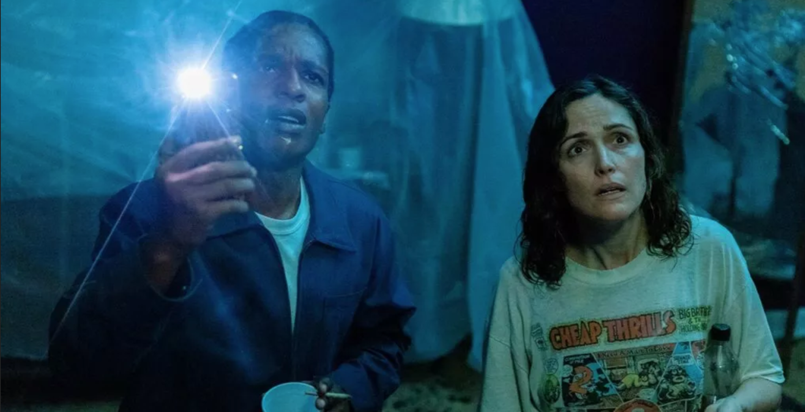 #20 — If I Had Legs I’d Kick You RUNNER-UP FOR MOST NAUSEATING (COMPLEMENTARY) — BEST WEED MOVIE — MOST ANTICIPATED OSCAR BITS My second-favorite moms going through it film simply lacks the integration of score and songs that most wins me over at the cinema, but its few otherworldly turns delighted. The film highlights one of my largest societal concerns, the wage slave employee that is more on the side of the institution that couldn’t care less about them or their livelihood than on the side of the customer. As the owner and operator of a public-facing business, I will ALWAYS let a stranger use our restroom and will ALWAYS make change for them, and while I’m not going to give away product, punishing customers for arriving at ~not quite~ the right hour and being refused service is among the great sins we self-inflict. Film Forum remains on my shit list for similar lunatic behavior. Watch your favourites elsewhere if you ask me. I wish Rose Byrne has chosen violence 🍷 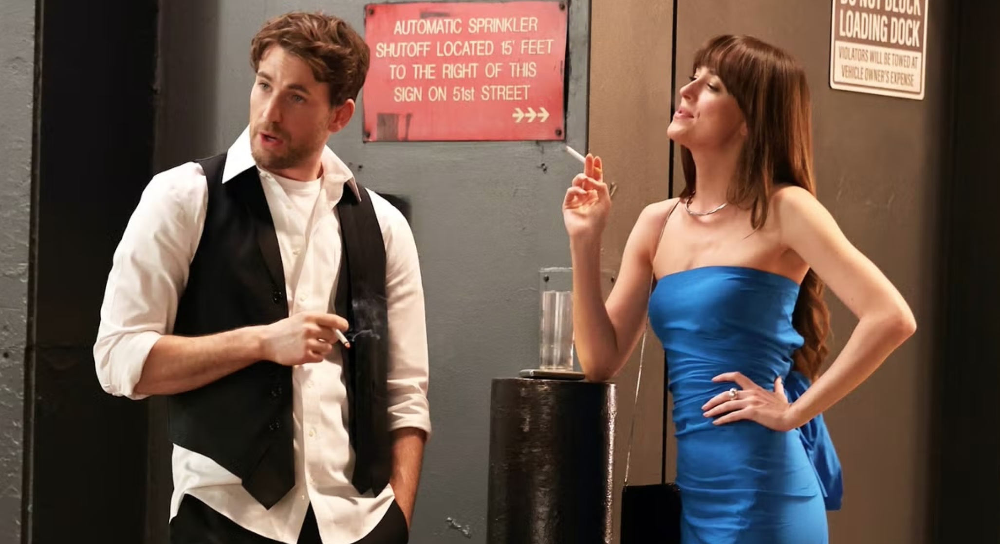 #19 — Materialists BEAUTIFULLY SHOT — MOST NEW YORK CITY, BABY — WORST DATES Dakota Johnson is employed perfectly here, her charismatic lack a pretty pained face that mirrors the people of this city’s vacant stares as they walk insulated in headphones from the world around them. She’s not asked to be Meg Ryan and the movie isn’t trying to be a Rom Com, but shows off one of the grimmer sides of coupling, matchmakers! People poo-poo Pascal, but he too is playing putty precisely, a vacant man floating from his purposeless position to character-free environs for both living and dining. Gag! Celine Song’s latest may have been more bitter a pill to swallow than its ad campaign indicated, but I take its accuracy in critiqueing a particular metropolitan worldview more likely to be what the naysayers are recoiling against, bad faith readings spurred on by not liking to be the butt of the joke. More biting than the silly Splitsville, my favorite proper Rom Com of the year with the best fight choreography behind The Shadow’s Edge! 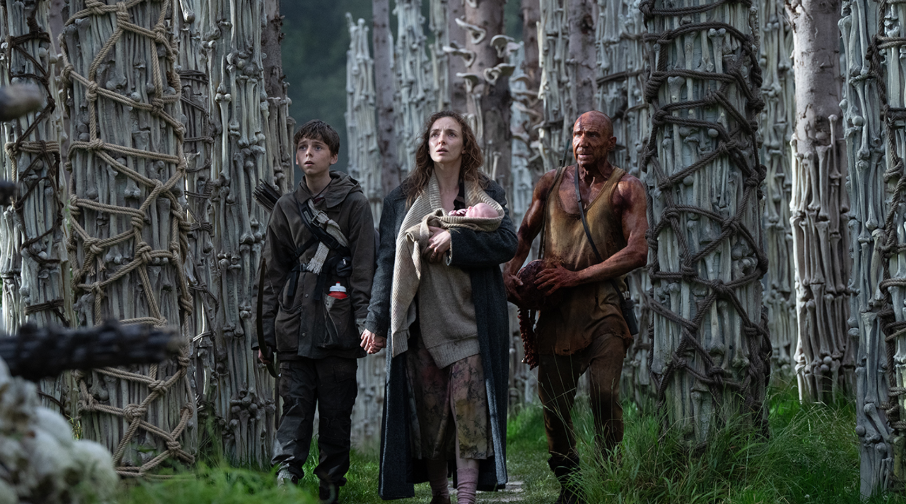 #18 — 28 Years Later PRETTIEST FILM SHOT ON IPHONE — BEST HORROR — SEX POSITIVITY MEANS DICKS TOO A banger of a horror film, tense, gory and thrilling. Among the most heart-pounding sequences this year is an early set piece that makes use of mother nature’s rhythms as the both stunning backdrop and bomb timer counting down to doom. At its core a coming-of-age story featuring an excellent performance by Alfie Williams as a boy looking out for his ailing mother, Jodie Comer, who are surviving in an isolated community decades after a virus wrecked the United Kingdom. Danny Boyle’s directs a visually inventive take on an Alex Garland script that hits familiar beats until it doesn’t. Seems a future not so far away, frighteningly. Ralph Fiennes and Chi Lewis-Perry are also standout supporting characters who feature more prominently in Nia DaCosta’s The Bone Temple, a follow-up also written by Garland that’s great in its way, if grimmer by a few degrees. 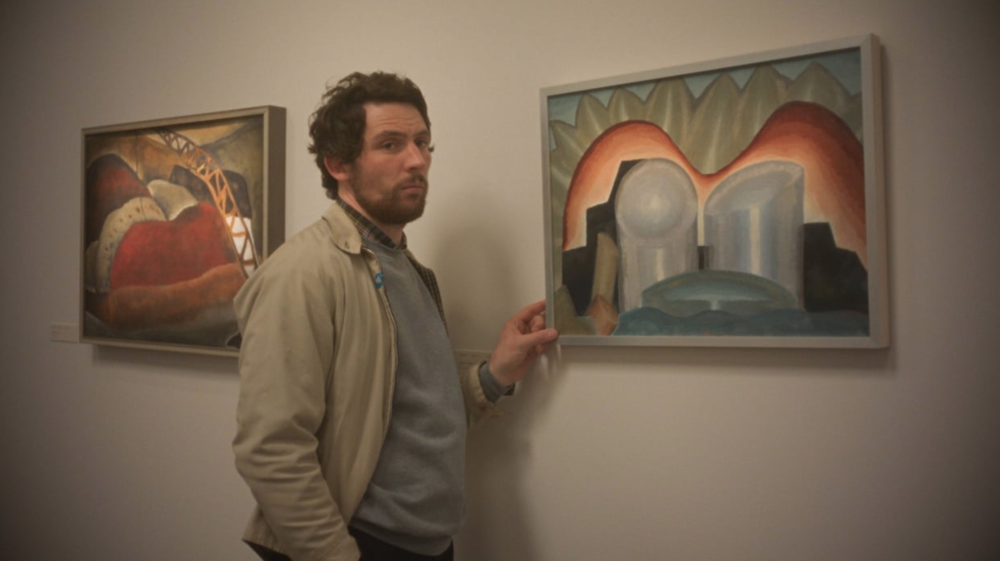 #17 — The Mastermind BEST JAZZY SCORE — BEST HEIST — RUNNER–UP FOR WORST DAD Josh O’Connor continues to be one of the most welcoming screen presences of the last half-decade, even when he’s playing a head-in-the-clouds loser who puts his responsibilities aside for a taste of thrill, here the minor heist of an inconsequential piece of art from a regional museum. The look and tone Reichhardt’s film’s are never really flashy, even a hostage situation has the intensity of a sleepy elder raising up from their chair, slow and creaking, but the lively score here makes for one of the snappiest entries in her ouvre. 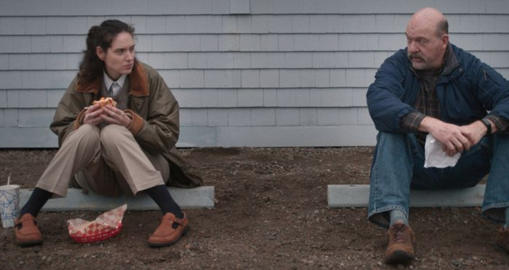 #16 — Sorry, Baby 2ND BEST SHOW DON’T TELL — BEST OUT-OF-SEQUENCE STORYTELLING — BEST FEATURED ACTOR (JCL) Both Eva Victor’s debut feature and another in the top ten feature small spotlight performances that are two of my favorite balms for the soul of the year. John Carroll Lynch gives one of two beautiful, small performances that is a warm light in an otherwise dark hallway of the soul. It also features among the most memorable shots of the year, a still time lapse of some hours featuring the exterior of a house shot from across the street, a character leaving and then driving away. Woof! Naomi Ackie plays Victor’s close #15 — Eddington BEST WORST CONTEMPORARY TECH USE — BEST FACIAL HAIR — MOST MISUNDERSTOOD BY MORONS Joaquin Phoenix commits to playing earnestly a character we all know, the flabbergasted other who cannot or will not share a lived reality with the neighbours he has sworn to protect. Ari Aster’s new nightmare rings truer as time passes and I only hope that we can collectively lift from the national nosedive towards ever worse prospects in the coming years. I implore you and all readers to pull your head out of Zuck’s asshole the next time you have the desire to post. Stop feeding the beast, please! #14 — Resurrection MOST “AM I DREAMING OR…” — BEST ONER — BEST ‘ANTHOLOGY’ An extremely moving work that plays with the senses and the history of cinema to a degree that is so close to being masturbatory without quite crossing that boundary. Like Bi Gan’s last film, there is a pretty magnificent single shot or “oner” that is ~technically~ even longer (a technique in the ether this year with The Studio abusing the form amusingly). I expect this to be the film on the list most likely to be turned off within the first ten minutes, but also the most surprising to those who stick with it through its various acts, not quite an anthology but not not one. Also, move over Elordi (whose performance ~was~ the highlight of that odd misfire of a film), Jackson Yee’s transformations across the eras explored were even more wild. 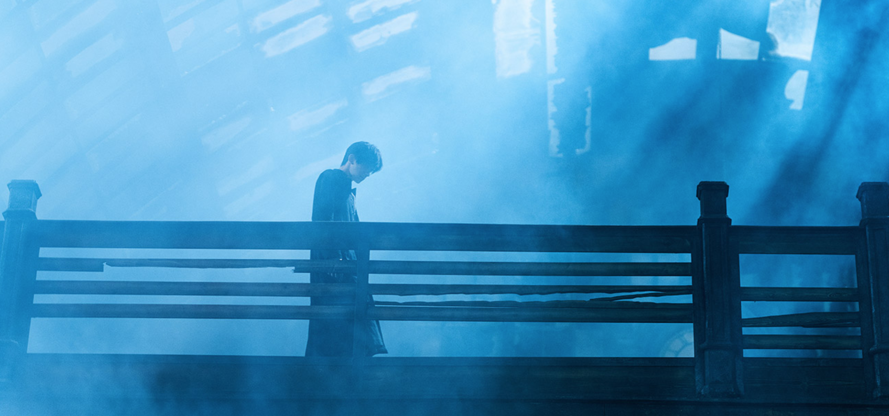 #13 — Cloud MOST UNEXPECTED TURNS — WORST GIRLFRIEND — BEST ‘MAYBE TOUCH GRASS’ MORALITY PLAY The film that, paired with Eddington, best presents the deluded and the delusions that arise as the wrong sides of the internet infect and numb. Kiyoshi Kurosawa’s crime film that crescendos spectacularly after a placid start, Masaki Suda’s reseller peace only interrupted by the desires and eventual demands of his girlfriend Kotone Furukawa. As his business expands, his business grows to require assistance, provided by local punk Daiken Okudaira, among my favorite supporting turns of the year. I’ll say no more and avoid spoiling the great fun had in this underseen thriller. #12 — The Secret Agent BEST FOUND FAMILY — BEST SHOW DON’T TELL — WORST ROAD TRIP My father was born and raised in the country of Panama and resides there once again, retired from captaining oil tankers to captaining tugboats protecting those larger vessels as they pass through the canal. An interesting point of comparison to see first-hand the state of the nation since the Carter administration ended the little communist utopia of full employment, military and civil, at least for a couple miles east or west of the canal. I’ve experienced almost as many stops by police for bribes as visits to the nation, encountering checkpoints along the highway and hearing worse stories. A time of only a little mischief blessedly, but an interesting point of comparison to the masked goons now haunting our streets. At least in Panama and Brazil they’ve the decency to show their faces, with some confidence at least, reciprocation be damned. Such cowardice abounds here. #11 — Sinners BEST MUSICAL NUMBER — BEST BLUES — SEXIEST FILM  #10 — No Other Choice BEST SCORE — MOST INVENTIVE MURDERS — BEST DOGS #9 — The Baltimorons BEST ONE CRAZY NIGHT — BEST NO FAME-OS — MOST LIVED IN #8 — The Chronology of Water BEST DEBUT FEATURE — WORST DAD — BEST EDUCATOR 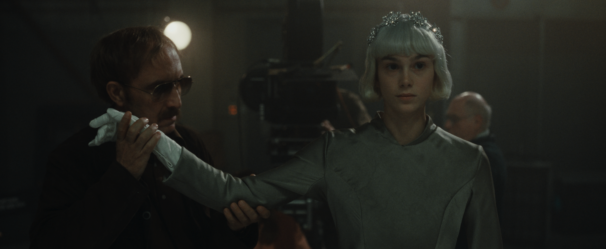 #7 — The Ice Tower MOST BRRRRRRRRRR — BEST BACKSTAGE HIJINKS — BEST WET STREETS #6 — Weapons MOST ACCURATE MODERN WITCH HUNT — BEST ACT BREAKS — BIGGEST HELL YEAH #5 — The Shrouds BEST DUNKING ON AI — MOST IMPACTFUL OPENING MOMENTS — BEST CHAT/FUCK 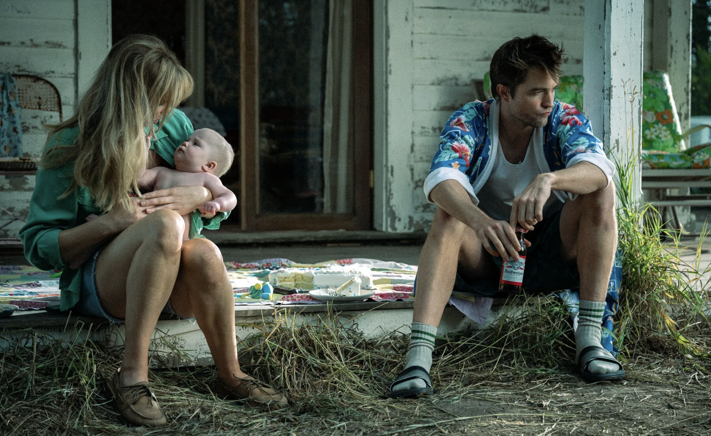 #4 — Die My Love MOST NAUSEATING — MOST PATIENCE FOR THE IDIOCY OF DUMB MEN — BEST SOUND DESIGN #3 — It Was Just an Accident CAST I MOST WANT TO SEE GOING ON ANOTHER QUEST — BEST VILLAIN? — MOST RURAL PLACES ARE SCARY #2 — Caught by the Tides MOST YEARS GONE BY — BEST WHAT IS ROMANCE ANYWAY? — BEST DECADES-LONG PROJECT 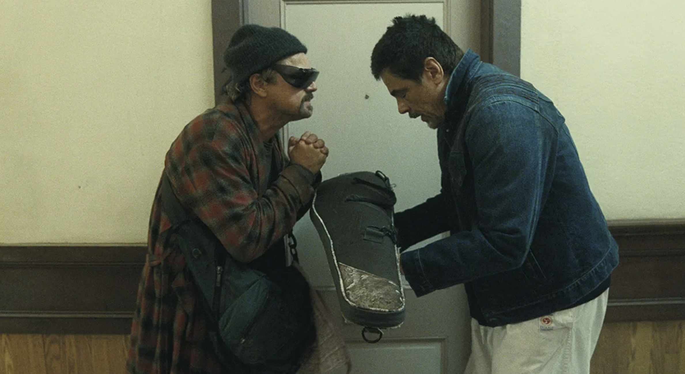 #1 — One Battle After Another BEST PICTURE — A+ — MOST REWATCHABLE |


Thursday - Free Tasting! Friday - Free Tasting! Saturday - Free Tasting! 
|